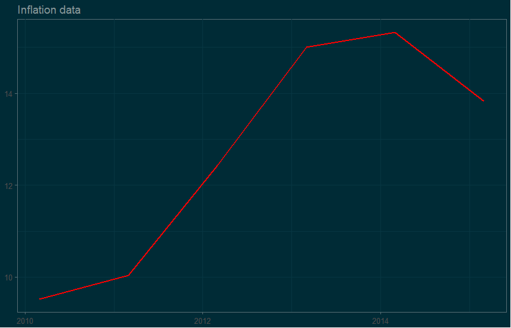

Intro to download economic data in R
Irina Goloshchapova
Center for Macroeconomic Analysis and Short-Term Forecasting
Open Data Science
Plan
Why we want to automate the download data process
What we should use in R if we want download open economic data
How we should use it
Plan
One thing first!
Please, open the presentation in local PCs!
http://irinagoloshchapova.github.io/Progs/OpenData_March_2017/
Why automate
Why automate
- Frequent need to quickly access the data: regular monitoring, dashboard
- Complex computations with data to obtain final dataset
- You need big data
- Database structure in your pocket
What we should use
What we should use
- R Packages
- Self connection functions to API
How to use: R packages
How to use: R Packages
Firstly: Google it!
How to use: R Packages
How to use: R Packages
Key principles
Read materials and choose package: CRAN, GitHub
Undestand searching and downloading structure in the chosen package: Tutorials
Try simple example: GitHub, R-Bloggers, Google
Download what do you need: R
How to use: R Packages
Prerequisites
install.packages(c('devtools', 'tidyverse', 'ggthemes', 'httr', 'jsonlite'))
devtools::install_github("vincentarelbundock/WDI")
devtools::install_github("GIST-ORNL/wbstats")
devtools::install_github('mingjerli/IMFData')
devtools::install_github('christophergandrud/imfr')
How to use: R Packages
Example: World Bank
Read materials and choose package
How to use: R Packages
Example: World Bank
How to use: R Packages
Example: World Bank
Undestand searching and downloading structure in the chosen package
install package
search needed indicators codes
define sample of countries
define period of time
define final data format
download
How to use: R Packages
Example: World Bank
Try simple example
library(wbstats)
library(ggplot2)
oil_data <- wb(indicator = c("CRUDE_DUBAI", "CRUDE_BRENT", "CRUDE_WTI", "CRUDE_PETRO"),
startdate = "2012M01", enddate = "2014M12", freq = "M", POSIXct = TRUE)
ggplot(oil_data, aes(x = date_ct, y = value, colour = indicator)) + geom_line(size = 1) +
labs(title = "Crude Oil Price Comparisons", x = "Date", y = "US Dollars")
How to use: R Packages
Example: World Bank
Download what do you need
library(wbstats)
library(ggplot2)
library(ggthemes)
wbsearch(pattern = "inflation", fields = "indicator", extra = TRUE)
# indicatorID indicator
# 8294 NY.GDP.DEFL.KD.ZG Inflation, GDP deflator (annual %)
# 10895 FP.CPI.TOTL.ZG Inflation, consumer prices (annual %)
deflator <- wb(indicator = "NY.GDP.DEFL.KD.ZG", country = "RU", mrv = 16, freq = "Y", POSIXct = TRUE)
CPI <- wb(indicator = "FP.CPI.TOTL.ZG", country = "RU", mrv = 16, freq = "Y", POSIXct = TRUE)
inflation_data <- rbind(deflator, CPI)
g <- ggplot(inflation_data, aes(x = date_ct, y = value, colour = indicator)) + geom_line(size = 1)
g <- g + labs(title = "Inflation data", x = NULL, y = NULL)
g <- g + guides(colour = guide_legend(title = '', size = 3.5))
g <- g + theme_solarized()
g <- g + scale_colour_solarized()
g <- g + theme(legend.position = 'top')
g
How to use: R Packages
Example: World Bank
Visualize results

How to use: R Packages
Example: International Monetary Fund
Read materials and choose package
How to use: R Packages
Example: International Monetary Fund
How to use: R Packages
Example: International Monetary Fund
Undestand searching and downloading structure in the chosen package
install package
choose database ID
define database dimensions and their codes
search needed indicators codes
define sample of countries
define period of time
define final data format
download
How to use: R Packages
Example: International Monetary Fund
Try simple example
library(IMFData)
databaseID <- "IFS"
startdate = "2001-01-01"
enddate = "2016-12-31"
checkquery = FALSE
## Germany, Norminal GDP in Euros, Norminal GDP in National Currency
queryfilter <- list(CL_FREQ = "", CL_AREA_IFS = "GR", CL_INDICATOR_IFS = c("NGDP_EUR",
"NGDP_XDC"))
GR.NGDP.query <- CompactDataMethod(databaseID, queryfilter, startdate, enddate,
checkquery)
GR.NGDP.query$Obs[[1]][1:5, ]
# @TIME_PERIOD @OBS_VALUE
# 1 2001-Q1 35.2366
# 2 2001-Q2 36.7264
# 3 2001-Q3 39.8428
# 4 2001-Q4 40.3881
# 5 2002-Q1 37.4971
How to use: R Packages
Example: International Monetary Fund
Download what do you need
library(IMFData)
library(ggplot2)
availableDB$DatabaseID
# FSI
# "Financial Soundness Indicators (FSI)"
FSI.available.codes <- DataStructureMethod("FSI")
names(FSI.available.codes)
# [1] "CL_FREQ" "CL_AREA_FSI" "CL_INDICATOR_FSI"
CodeSearch(FSI.available.codes, "CL_INDICATOR_FSI", "stability")
CodeSearch(FSI.available.codes, "CL_INDICATOR_FSI", "Debt")
# FSHG_PT
# Financial Soundness Indicators, Encouraged Set, Households, Household Debt to Gross Domestic Product (GDP), Percent
databaseID <- "FSI"
startdate = "2000-01-01"
enddate = "2016-12-31"
checkquery = FALSE
queryfilter <- list(CL_FREQ = "", CL_AREA_FSI = "RU", CL_INDICATOR_FSI = "FSHG_PT")
indicator_query <- CompactDataMethod(databaseID, queryfilter, startdate, enddate, checkquery)
indicator_query$Obs[[1]]
How to use: R Packages
Example: World Bank
Visualize results

How to use: API connection
How to use: API connection
Firstly: Read API documentation!

How to use: API connection
Key principles
Read API documentation: official websites of stat resources
Undestand searching and downloading structure of API: things hided in R libraries
Generate code to download simple piece of data: download almost anything - at least once
Generalize code to download all what you need: functions to download, parameterisation for your purposes
How to use: API connection
Example: World Bank
How to use: API connection
Example: World Bank
Undestand searching and downloading structure of API
what kind of API is it
available formats to download
format=jsonget list of available countries
http://api.worldbank.org/countriesget list of available indicators
http://api.worldbank.org/indicatorsdefine time period
date=2000:2001; date=2009Q1:2010Q3; date=2009M01:2010M08
How to use: API connection
Example: World Bank
Undestand searching and downloading structure of API
- understand link structure
# url parameters
base_url <- 'http://api.worldbank.org'
countries <- '/countries/'
indicators <- '/indicators/'
date <- '?date='
per_page <- '&per_page=20000'
format <- '&format=json'
start_period <- '1950'
end_period <- '2016'
# building url for API call
paste0(base_url, countries, <COUNTRIES_QUERY>, indicators, <INDICATOR_QUERY>, date, start_period, ':', end_period, per_page, format)
How to use: API connection
Example: World Bank
Generate code to download simple piece of data
# get list of countries
## loading libraries
library(httr)
library(jsonlite)
library(tidyverse)
library(ggplot2)
## generate url
url <- 'http://api.worldbank.org/countries?format=json&per_page=300'
## get data
raw.result <- GET(url)
names(raw.result)
this.content <- fromJSON(rawToChar(raw.result$content))
str(this.content)
length(this.content)
View(this.content[[2]])
wb_countries <- this.content[[2]]
How to use: API connection
Example: World Bank
Generate code to download simple piece of data
# get list of indicators
## generate url
url <- 'http://api.worldbank.org/indicators?format=json&per_page=20000'
## get data
raw.result <- GET(url)
this.content <- fromJSON(rawToChar(raw.result$content))
# str(this.content)
# length(this.content)
wb_indicators <- this.content[[2]]
# view data
View(wb_indicators)
# Attention! Nested data.frame for topics!
How to use: API connection
Example: World Bank
Generate code to download simple piece of data
# example query for one indicator
url <- 'http://api.worldbank.org/countries/br;ru/indicators/SP.POP.TOTL?date=2013Q1:2015Q4&format=json'
raw.result <- GET(url)
example_query <- fromJSON(rawToChar(raw.result$content))
# str(example_query)
View(example_query[[2]])
How to use: API connection
Example: World Bank
Generalize code to download all what you need
saving tables with values for needed parameters
functions to download, useful for you
How to use: API connection
Example: World Bank
Generalize code to download all what you need
# generalizing previous url building code for several indicators
queries <- lapply(<INPUT_CODES>, FUN = function(x) paste0(base_url, countries, wb_countries_query, indicators, x, date, start_period, ':', end_period, per_page, format))
# example of input codes
input_codes <- c('i_acc_deposit_A1', 'GFDD.AI.25')
How to use: API connection
Example: World Bank
Generalize code to download all what you need
# download_wb_function.R
# source('download_wb_function.R')
library(dplyr)
library(tidyr)
library(purrr)
library(lubridate)
library(httr)
library(jsonlite)
library(data.table)
options(stringsAsFactors = FALSE)
##--------------------------------------------------------------------------
## Functions: download and basic processing
##--------------------------------------------------------------------------
# try.error function
try.error <- function(x)
{
y = NA
try_error = tryCatch(data.frame(x), error = function(e) e)
if (!inherits(try_error, "error"))
y = data.frame(x)
return(y)
}
# download_WB function
download_WB <- function(queries) {
new_data_list <- list()
for (i in length(queries):1) {
cat("Iteration = ", iter <- i, "\n")
this.query <- queries[[i]]
this.raw.answer <- GET(this.query)
this.content <- fromJSON(rawToChar(this.raw.answer$content))
new_data_list[[i]] <- try.error(this.content[[2]])
cat(ifelse(is.na(new_data_list[i]), 'False\n', 'True\n'))
if (!is.na(new_data_list[i])) {
metadata <- data.frame(Indicator_Id = new_data_list[[i]]$indicator$id,
Indicator_Value = new_data_list[[i]]$indicator$value,
Country_Id = new_data_list[[i]]$country$id,
Country_Value = new_data_list[[i]]$country$value)
new_data_list[[i]] <- select(new_data_list[[i]], -c(indicator, country))
new_data_list[[i]] <- mutate(new_data_list[[i]], Indicator_Id = metadata$Indicator_Id,
Indicator_Value = metadata$Indicator_Value,
Country_Id = metadata$Country_Id,
Country_Value = metadata$Country_Value)
}
else {new_data_list[i] <- NULL}
Sys.sleep(time = 0.01)
}
new_data_df <- rbindlist(new_data_list)
return(new_data_df)
}
## ----------------------------------------------------------------------
# new_data_df <- download_WB(queries)
## ----------------------------------------------------------------------
Contacts and collaboration
Irina Goloshchapova - @irina_g (ods), igoloshchapova@forecast.ru